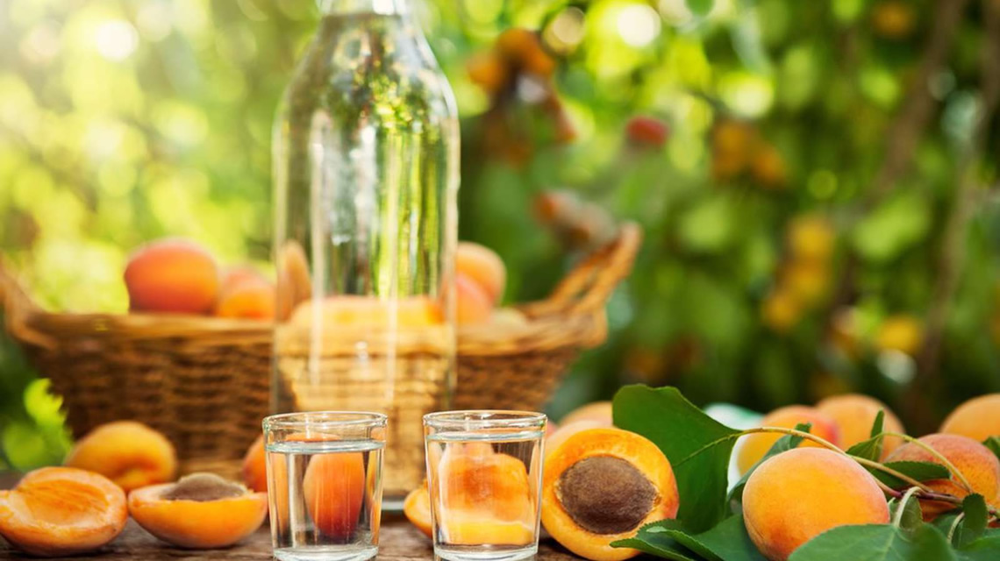

Pálinkafőzés
A pálinkafőzés a pálinka elkészítésének legfontosabb része, olyan biokémiai folyamat, amely az erjesztésből, a lepárlásból és az érlelésből áll. A gyümölcsfeldolgozás technológiája ennél összetettebb, többlépcsős folyamat. Része a gyümölcs válogatása, a mosás, a gyümölcs megfelelő aprítása, magozása, az enzimes kezelés és a pektinbontás, a pH-védelem: savazás kénsavval vagy foszforsavval, az erjesztés, majd végül a lepárlás.
Erjesztés
Maga az erjedés olyan biokémiai folyamat, amelyeket különböző élesztőtörzsek által termelt enzimek katalizálnak. A cefréhez általában fajélesztőt adnak, amely biztosítja az erjedés megindulását és egyenletes lefolyását. A kierjedt cefre vizet, alkoholt, valamint szilárd és oldott anyagokat tartalmaz. Illóanyag a víz, az etil-alkohol, valamint különböző kellemes és kellemetlen aromájú szerves vegyületek, a metil-alkohol, az aldehidek, a kozmaolajok, a szerves savak, az észterek és egyéb aromaanyagok.
Lepárlás
A pálinkakészítés egyik lényegi mozzanata, hogy a szakemberek az erjesztett cefréből elkülönítik az illóanyagokat a szilárd és nem illó anyagoktól. Ez a folyamat a desztillálás vagy lepárlás. Az erjedt cefrét előmelegített tartályokba fejtik, majd a vörösrézből vagy rozsdamentes acélból készült üstökben lepárolják. A pálinka desztillálása során a középpárlatot használják fel, vagyis a legértékesebb részt, amit a francia nyelv „le cœur”-nek, szívnek nevez. Az elő- és utópárlatot még egyszer desztillálják, a tisztább íz kedvéért. A középpárlat megfelelő elválasztása az elő- és utópárlattól rendkívüli szaktudást igényel, nagyrészt itt dől el a pálinka minősége. A kisüsti pálinka alkoholtartalmát szigorú előírás szerint (+/- 0,3% v/v) jó minőségű, ioncserélt vízzel állítják be a forgalomba hozatal előtt.
Érlelés
Ahhoz, hogy a pálinka a forgalomba hozatalkor már ne legyen karcos, zamata kialakuljon, vagyis többé-kevésbé beérett legyen, minden esetben bizonyos ideig tartó tárolás, érlelés szükséges. A párlat érlelése maximum tíz hektoliteres fahordókban történik, és minimum három hónapig tart. A tárolás célja a pálinka pihentetése. Ez nem igényel fahordós elhelyezést, hiszen nem az a cél, hogy a fából beoldódó újabb aromakomponensekkel gazdagodjon az ital. A mai italipari technológiákban általában rozsdamentes tartályok váltják fel a fahordókat a pálinkák, párlatok tárolásánál, érlelésénél, így csökkenthető a párolgási veszteség.